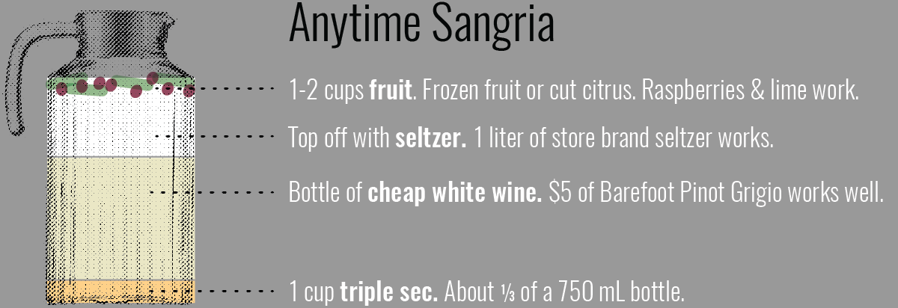
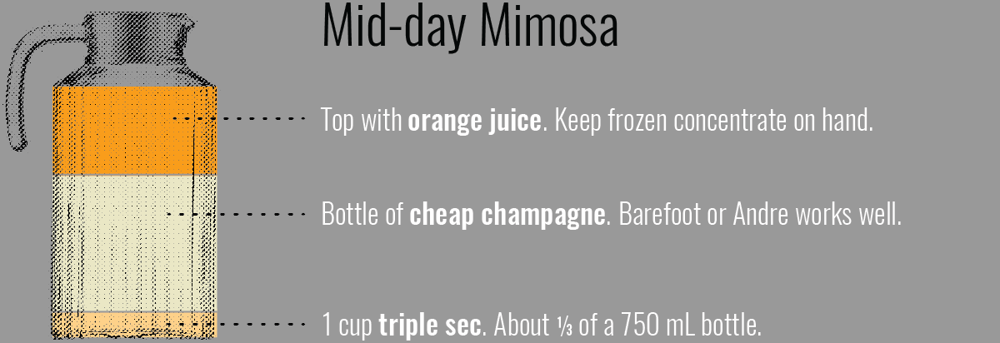
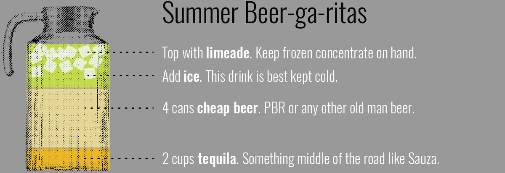
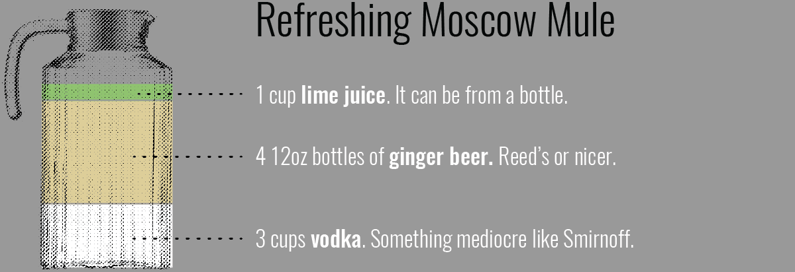
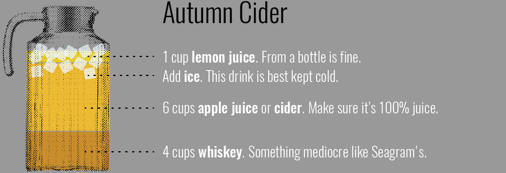
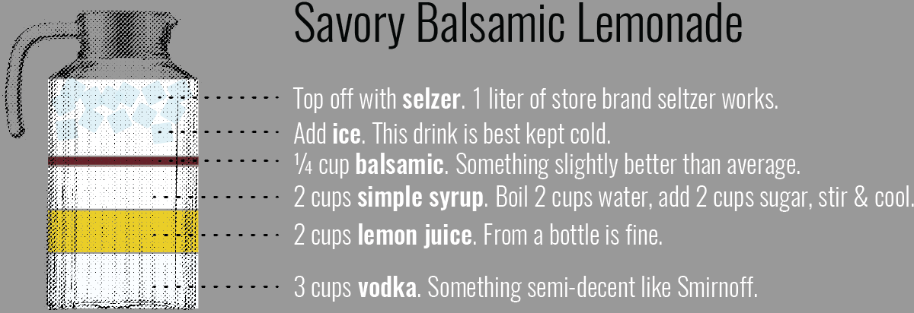
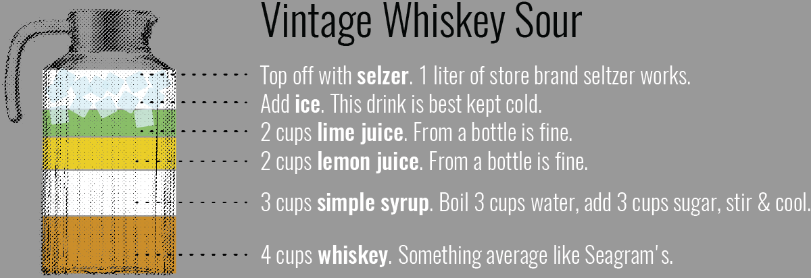
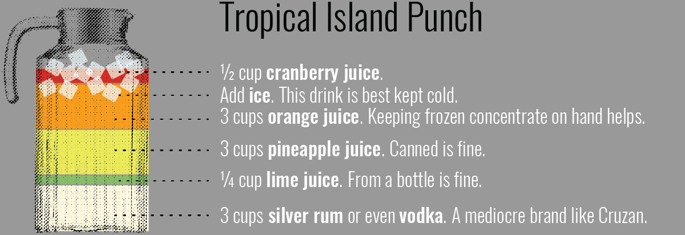
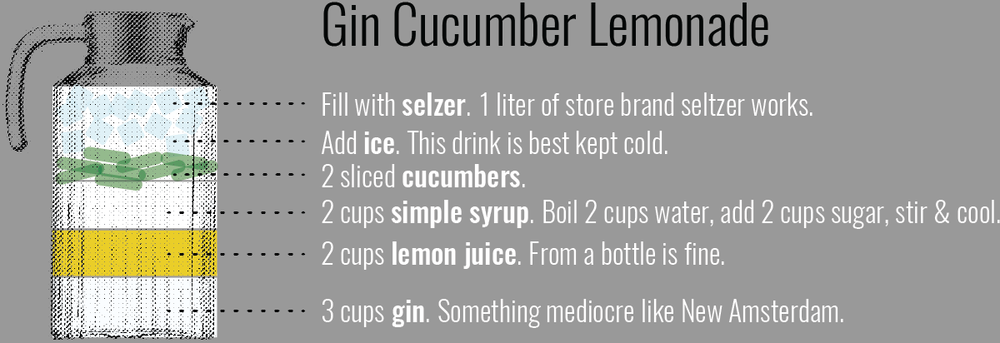

Boozy Punches
How to up your beverage game from college kid to real adult.
The Basics
Cheaper than beer
Compared to an average 6 pack of nice beer, which is about $10. Yes, there are some upfront costs, like a decent set of pitchers and some staple liquor. Suck it up, you're an adult now, right? And per drink, boozy punches are cheaper.
Classy as fuck
Memorable and unique. People don't remember a party for having a lot of cheap beer, but they DO remember a party with a well themed and delicious drink or two. A signature drink comes off as well thought out and like you have your shit together. Bonus points for punny names.
Shit you’ll need
Level 1

A wine based punch with fruit. It originates from Spain and Portugal.
Fun variations
- Seasonal: add cranberries, cut apples and rosemary for a Christmas variation
- Sports: use the color of fruit to make team themed drinks. Blueberries + mandarin oranges for the Chicago Bears and limes + peaches for the Green Bay Packers.
Cost effectiveness

Fun variations
- Other juices: Mango Tango from Odwala, grapefruit juice or even pomegranate is delicious.
Cost effectiveness

Fun variations
- Lime it up: Add some fresh lime juice to add a bit more tartness.
- No tequila, no problem: If you don't have tequila, vodka will work in a pinch.
Cost effectiveness
Level 2

Fun variations
- Gin + ginger: For a more herbacious twist, substitue gin for vodka, and add some candied ginger for garnish
Cost effectiveness

Fun variations
- Spice it up: add a couple cinnamon sticks and some freshly graded nutmeg to amp up the fall flavor.
Cost effectiveness

Fun variations
- Experiment with shrubs: sipping vinegars are all the rage, so try one in place of balsamic.
Cost effectiveness
Level 3

Fun variations
- Put a cherry on top: add a marachino cherry to each glass, or better yet, a whiskey soaked cherry for some extra flair.
Cost effectiveness

Fun variations
- Fruit-ier: add pineapple and orange slices for more tropical fun.
Cost effectiveness

Fun variations
- Fresh to death: add some fresh mint leaves in addition to or instead of cucumber.
Cost effectiveness